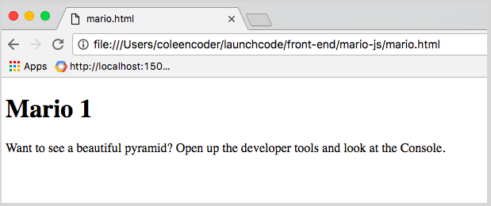
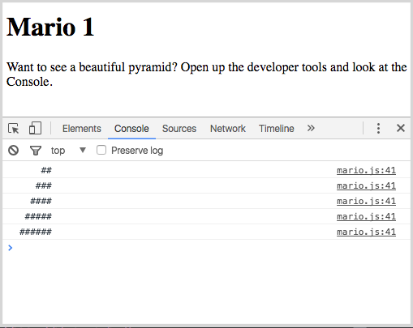

Studio: Mario 1
For today's studio, and a few more to follow, we will do a Javascript version of the classic "Mario" problem, borrowed from our friends at CS50.
Before we get started, please enjoy this humorous meme about Mario:

Turtles and such, simply uproarious, gets me every time.
Now then.
Obtaining the Starter Code
In this Unit, you will use Git to work on exercises and check out the starter code for those exercises. This page will provide a detailed walkthrough of the steps involved in that process for today's studio.
Here is how to grab the starter code:
-
Navigate to the parent directory where you want to keep your work for this class. For example, maybe something like
~/Documents/launchcode/front-end/. -
Clone the Git repository that contains the starter code for this studio:
$ git clone https://github.com/LaunchCodeEducation/mario-js.git Cloning into 'marios-js'... remote: Counting objects: 103, done. remote: Compressing objects: 100% (70/70), done. remote: Total 103 (delta 37), reused 99 (delta 33), pack-reused 0 Receiving objects: 100% (103/103), 13.06 KiB | 0 bytes/s, done. Resolving deltas: 100% (37/37), done. Checking connectivity... done.You should now have a folder called
mario-jsin your current directory. -
Navigate into your new
mario-jsfolder, and see what's inside:$ cd mario-js $ ls mario.html mario.js
And that's it!
Take a Look
Let's now see what this project looks like so far. Open up your mario.html file in a Chrome browser window.
You should see a very boring-looking page. The text on the page will invite you to open up the Chrome Developer Tools to see a "beautiful pyramid":

Go ahead and open up the dev tools, and navigate to the Console tab. You should now see a print statement:
Uh oh... the pyramid is under construction. Check back soon, our developers are hard at work as we speak!
Turns out, the "developers" are YOU. And indeed, you are about to be hard at work.
The Code
Let's take a look at the code. Open up mario.js in your text editor or IDE.
The file looks, essentially, like this:
printPyramid(5);
function printPyramid(height) {
// TODO
}The first line invokes a function called printPyramid, passing in the number 5 as an argument.
In the function definition, we can see that the 5 we passed in represents the height of the pyramid. The printPyramid function is supposed to render to the console a "pyramid" (whatever that means) of the specified height.
This is where you come in. The body of the function is essentially blank, with a big fat TODO waiting for you.
Over in the mario.html, you will see the elements that make up our very simply HTML page. Notice the <script> tag whose src attribute is equal to the path to our mario.js file: this is what causes the javascript code to execute every time the user visits or refreshes the page.
Your Task
What is this mysterious pyramid? Courtesy of CS50:
Toward the end of World 1-1 in Nintendo’s Super Mario Brothers, Mario must ascend a "half-pyramid" of blocks before leaping (if he wants to maximize his score) toward a flag pole. Below is a screenshot.

Your job is to implement the printPyramid function, using console.log statements to print a half-pyramid, like the one above, to the console. You can use a "#" symbol for each "brick".
The height of your pyramid should match the height argument that was passed in to the function. The pyramid in the image above has a height of 8. A pyramid of height 5 would result in a console that looks like this:

Tips and Notes
-
Notice, of course, that the pyramid slopes up to the right, and that the top row of the pyramid should be 2-bricks wide.
-
Be aware that in Javascript, a
console.logstatement automatically adds a newline character to the end of your string, so the next statement will start on the next line. This means that for each row of your pyramid, you will need to print that row all at once, rather than one character at a time. - Once you get it working, try passing in a different
heightargument rather than5, and you should of course see a different-sized result.
Committing Your Changes
Once you have finished, make sure you "save" your changes. In Git-land, this is a two-step process, add, and then commit:
-
Add
Here we specify which files we want to commit ("save"). Today we only modified one file,
mario.js.You can confirm as much by checking your status:
$ git status On branch mario1 Your branch is up-to-date with 'origin/mario1'. Changes not staged for commit: (use "git add <file>..." to update what will be committed) (use "git checkout -- <file>..." to discard changes in working directory) modified: mario.js no changes added to commit (use "git add" and/or "git commit -a")The important line is this one:
modified: mario.jsNow go ahead and
addthe file:$ git add mario.jsAfter adding, it, if you check your
statusagain, you will now see that your file is staged as a "change to be committed":$ git status On branch mario1 Your branch is up-to-date with 'origin/mario1'. Changes to be committed: (use "git reset HEAD <file>..." to unstage) modified: mario.js -
Commit
Now you are ready to
committhe changes you have added.When committing, you must also include a descriptive message of what you have changed. You can specify the message by including a
-mflag, followed by the message in qutotation marks. For example:$ git commit -m "implemented the printPyramid function"This descriptive message will allow other collaborators, and your future self, to easily see the history of the project.
After committing, if you check your status one more time, you will see that you are now in a "clean" state:
On branch mario1 Your branch is ahead of 'origin/mario1' by 1 commit. (use "git push" to publish your local commits) nothing to commit, working directory cleanFor these studios, the important part is the last line:
nothing to commit, working directory cleanThe other part is explaining that we are now one commit "ahead of" the remote repository on Github. But for these studios, we don't really care about staying in sync with the remote repo. To be clear, you do not need to use
git push. You can ignore the terminal's suggestion.
That's it! Congrats on finishing your first Javascript studio!
*NB, the reason the commit process is broken into two steps is because sometimes you might have modified multiple files, and you might not want to register all the changes as one big commit. You may want to break it up into multiple commits, with a reasonable message for each change. So the add command gives you the opportunity to specify exactly which files your want to include in a specific commit.